Angular Lightning
AngularJS Directives for Salesforce Lightning Design System
Available Components
Date Picker
Picklist
Lookup
Icons
Modals
Tooltips
Tabs
Text Editor
Progressbar
Date Picker
Beta
Date Picker Example Code
Picklist
Beta
Picklist Example Code
Lookup
Beta
Accounts
Lookup Example Code
Icons
Beta
Inside Input
Example Icon Code
Modals
Beta
Open
Example Modal Code
Tooltips
Beta
Tooltip Here
Tooltip With Template
Tooltip enabled if checkbox is checked:
Example Tooltip Code
Tabs
Beta
First tab!
The second tab is set to activate first!
Example Tab Code
Rich Text Editor
Beta
Model Value: {{dc.richtext}}
Example Rich Text Code
Progress Bar
Beta
With Badge (Default)
Progressbar Value:
No Badge
Example Progress Bar Code